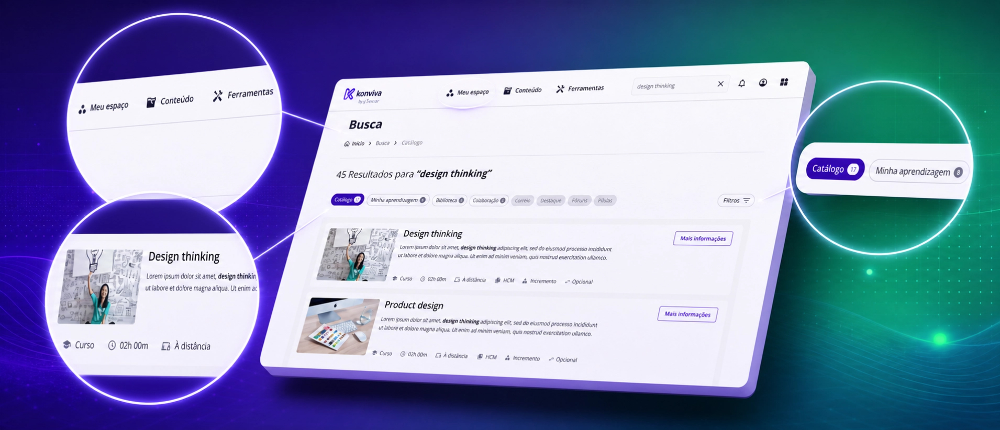
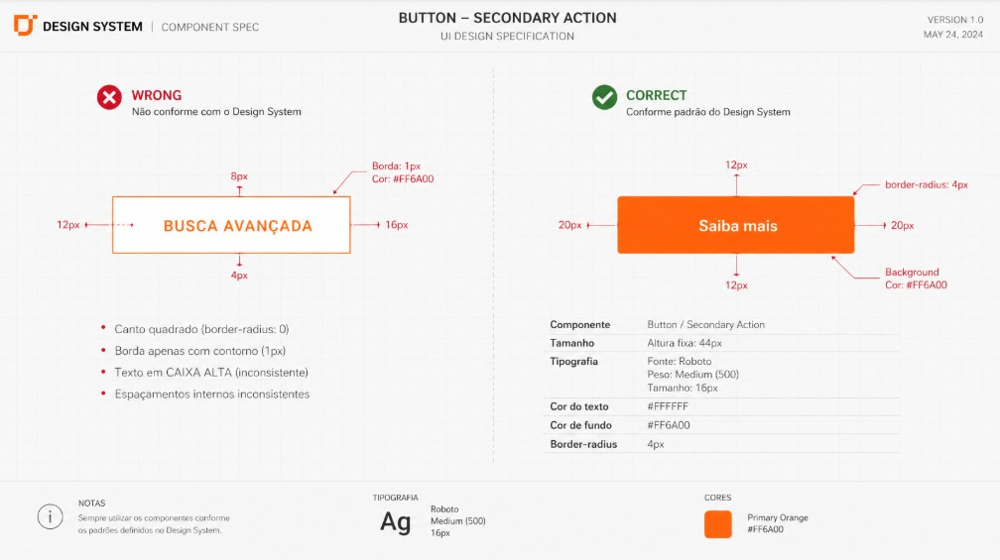

i.
Foco em componentes recorrentes
Priorização de componentes globais em vez de telas isoladas.
→ corrigir um botão corrige centenas de telasMapeamento de inconsistências visuais, documentação técnica e governança de Design System para elevar a qualidade percebida da plataforma às vésperas do Summit da Sênior.

A Konviva é uma plataforma LMS robusta que atende grandes empresas. O produto usava um Design System híbrido: uma base de Material Design integrada a componentes customizados desenvolvidos internamente.

A solução não foi um novo design, mas a restauração da integridade visual dentro do que já existia no Design System híbrido.
Priorização de componentes globais em vez de telas isoladas.
→ corrigir um botão corrige centenas de telasNenhum componente novo — a solução foi encontrada dentro do DS híbrido existente.
→ evita aumentar o débito técnicoPriorização de elementos de "primeira dobra" e dos fluxos que seriam demonstrados no Summit.
→ máximo impacto visível com prazo curtoAuditoria de interface
Análise de impacto
Documentação de desvios
Rito de alinhamento
"Design System sem governança é apenas uma biblioteca de arquivos."
Feedback positivo direto de stakeholders e times.
Documentação adotada como guia oficial, reduzindo dúvidas.
Menos componentes ad-hoc criados pelo time.
Plataforma apresentada sem ruídos visuais.
Este case reforçou que Design System sem governança é apenas uma biblioteca de arquivos — consistência exige esforço contínuo.